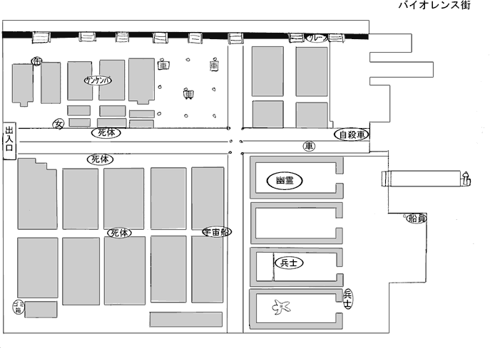

マンション地帯（左上）には缶 ・ けんけん少女、 ビル地帯（左下）にはバラバラ死体のゴミ箱・死体（大量発生）・宇宙船、 倉庫地帯（右下）には兵士 ・ 船員 ・ ポリゴン、 道路上には女の子 ・ 死体 ・ 海に飛び込む車（自殺車）・ゆっくり走る車が出現。
壁に目玉のテクスチャが貼られることがある。
死体を蹴る男はケンケンパしてる少女付近。 謎の紳士はマンション地帯に出現する事が多い。 ビル屋上から横移動で落ちた時はビル街の死体の所に落ちる。